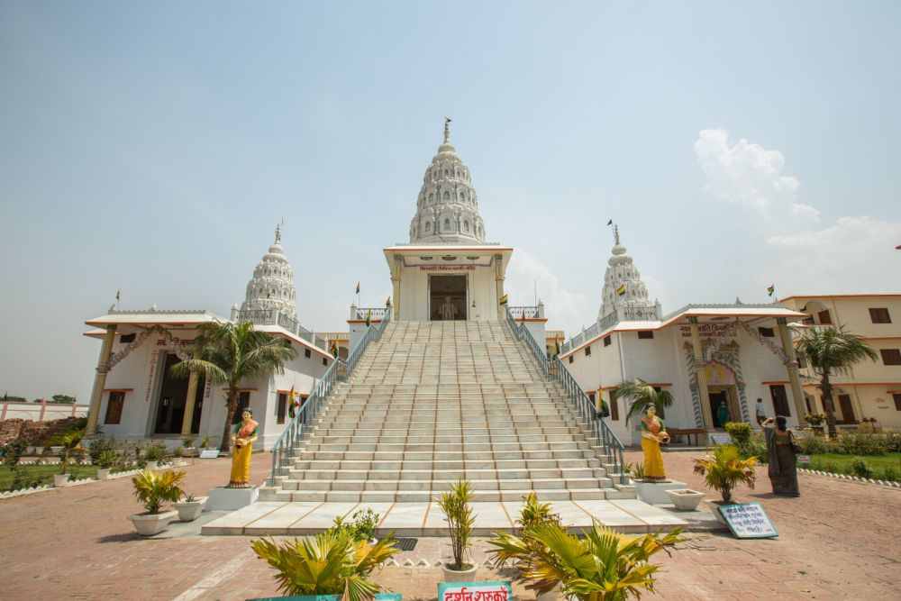
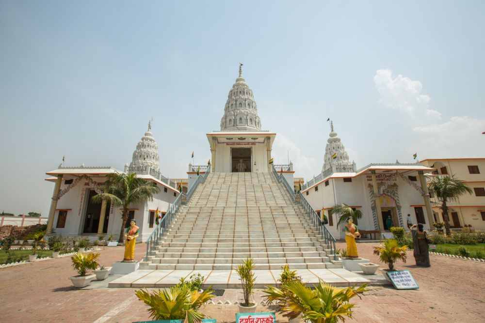

VAISHALI
Vaishali district is located in the state of Bihar, India. It holds historical and cultural significance as it was once the capital of the Vajji Mahajanapada and is considered one of the world's earliest republics. It is also closely associated with Lord Mahavira, the 24th Tirthankara of Jainism, who was born here, and Gautama Buddha, who preached his last sermon in Vaishali.Vaishali is a district in the Indian state of Bihar. It holds historical and cultural significance, especially in relation to Lord Mahavira, the founder of Jainism, and Lord Buddha, who preached his last sermon at Vaishali. The district is named after the ancient city of Vaishali, which was the capital of the Vajji Mahajanapada in ancient India.Vaishali is a historically and culturally rich district in Bihar, known for its deep connection with Buddhism, Jainism, and ancient democracy. The culture of Vaishali is highly influenced by its religious, historical, and traditional background..
KEY INFORMATON ABOUT VAISHALI DISTRICT
Vaishali district in Bihar is a significant tourist destination, especially for those interested in Buddhism, Jainism, and ancient history. Here are some of the top tourist attractions in Vaishali:
1. Ashokan Pillar Built by Emperor Ashoka in the 3rd century BCE. Made of polished sandstone and topped with a single lion capital. A symbol of peace and Buddhism, as Ashoka embraced Buddhism after the Kalinga war.2. Buddha Stupa (Relic Stupa) Houses the relics of Lord Buddha. One of the oldest stupas, dating back to the time of Buddha’s Mahaparinirvana. A major pilgrimage site for Buddhists.
3. Vishwa Shanti Stupa (World Peace Pagoda) Built by the Japanese Buddhist community. A beautiful white stupa with golden Buddha statues. A peaceful place with a serene environment for meditation.
4. Kundalpur (Birthplace of Lord Mahavira) Jain pilgrimage site as it is believed to be the birthplace of Lord Mahavira, the 24th Tirthankara. Houses Jain temples and shrines.
5. Bawan Pokhar Temple An ancient Hindu temple dedicated to different deities. Located near a large pond known as Bawan Pokhar. Features beautifully carved stone idols from the Gupta period.
6. Raja Vishal Ka Garh (Ancient Parliament House) Believed to be the remains of an ancient republic that existed in 6th century BCE. A massive earthen fortification. Symbolizes the democratic system of the Vajji Republic.
HISTORY OF VAISHALI DISTRICT
< p>Vaishali district, located in the state of Bihar, India, has a rich historical and cultural significance. It is known as one of the most ancient places in India and holds a prominent place in the history of Buddhism and Jainism. 1. Medieval History: During the Gupta dynasty, Vaishali continued to flourish as a center of culture and trade. It later came under the rule of the Maurya dynasty during the reign of Chandragupta Maurya and Ashoka the Great.
2. Modern History: In British India, Vaishali was part of the Tirhut division. After India's independence in 1947, Vaishali became a part of Bihar and was officially declared a district in 1972.
send email +7033815220
IMAGE

 
